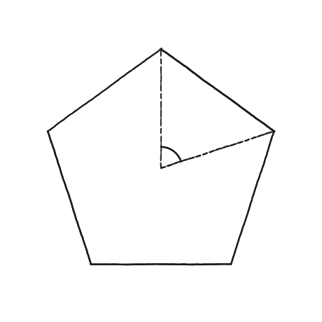
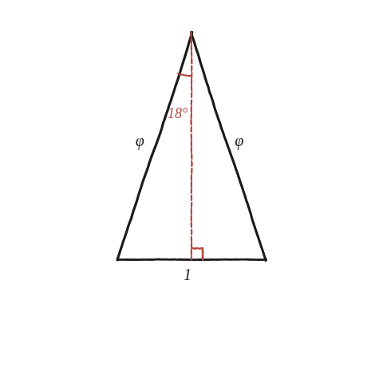

Es pot fer servir un pentàgon regular per trobar el sinus i el cosinus d'un cinquè de volta?

Un angle, dues xifres exactes
Un cinquè de volta són 72°. Cal el sinus i el cosinus d'aquest angle, expressats exactament en termes de φ=(1+√5)/2 —no un valor decimal aproximat.
El 72° ja hi és: és l'angle de la base
El triangle que fa falta és l'isòsceles de base 1 i costats φ, amb 36° a la punta i 72° a cada angle de la base. És el que estableix la Qüestió 33 —i que aquella mateixa qüestió adverteix de no confondre amb els triangles A, B i C de la Qüestió 31, que són 36°-36°-108°. Com que l'angle buscat ja hi és dibuixat, no cal passar per cap angle intermedi.
Partir el triangle daurat pel mig
L'altura des del vèrtex parteix l'angle de 36° exactament per la meitat (18° a cada banda) i la base (1) també per la meitat. El triangle rectangle petit que en resulta té hipotenusa φ i un catet igual a 1/2 (la meitat de la base). Aquest catet és l'oposat a l'angle de 18° de la punta i, alhora, el contigu a l'angle de 72° de la base: cos72° = (1/2)/φ = 1/(2φ). La qüestió està mig resolta amb una sola divisió.

L'altre catet dona el sinus
L'alçada és el catet que falta. Pitàgores: alçada = √(φ²−¼) i, com que φ²=φ+1 (Qüestió 33), això és √(φ+¾). Dividint per la hipotenusa φ: sin72° = √(φ+¾)/φ, que simplificat és √(φ+2)/2. Amb φ²=φ+1 es comprova que les dues expressions coincideixen: elevant-les al quadrat, (φ+¾)/φ² = (φ+2)/4 equival a 4φ+3 = φ²+3φ+2, que és cert.
Per què la ruta de l'angle doble no hi afegeix res
És temptador anar de 18° a 36° i de 36° a 72° amb la fórmula de l'angle doble. Fet així funciona i, de passada, dona la identitat cèlebre cos36° = φ/2. Però val la pena veure on acaba: dona cos72° = (φ−1)/2 = 1/(2φ), que és exactament el número que ja s'havia llegit del dibuix al pas anterior. No és casualitat —18° i 72° són complementaris, i per tant sin18° i cos72° són la mateixa raó (Qüestió 78). El camí llarg torna al punt de partida.
cos72° = 1/(2φ) = (φ−1)/2 ≈ 0,309 i sin72° = √(φ+2)/2 ≈ 0,951. Tots dos surten d'un sol dibuix: el triangle isòsceles de base 1, costats φ i 36° a la punta (Qüestió 33), partit pel mig per l'alçada. El triangle rectangle que en queda té hipotenusa φ, catet contigu al 72° igual a 1/2, i catet oposat √(φ²−¼)=√(φ+¾). La identitat φ²=φ+1 de la Qüestió 33 és l'única cosa que cal per simplificar.
Comprovació
φ≈1,618. cos72° = 1/(2·1,618) ≈ 0,309, i (φ−1)/2 = 0,618/2 = 0,309: coincideixen, com han de fer si φ²=φ+1. Alçada = √(1,618+0,75) ≈ 1,539, i sin72° = 1,539/1,618 ≈ 0,951; per l'altra expressió, √(3,618)/2 ≈ 0,951 ✓. Finalment 0,309²+0,951² = 1,000 ✓.